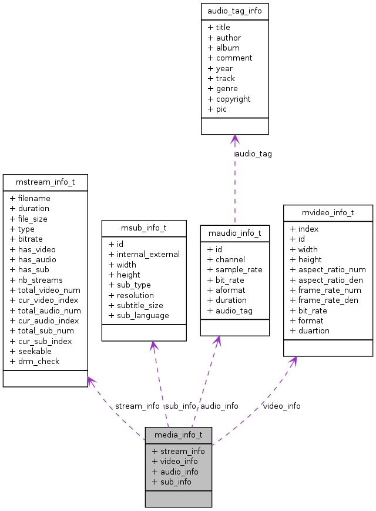

Main Page
Classes
Files
Class List
Class Index
Public Attributes
media_info_t Struct Reference
Collaboration diagram for media_info_t:

[
legend
]
List of all members.
Public Attributes
mstream_info_t
stream_info
mvideo_info_t
*
video_info
[MAX_VIDEO_STREAMS]
maudio_info_t
*
audio_info
[MAX_AUDIO_STREAMS]
msub_info_t
*
sub_info
[MAX_SUB_STREAMS]
Detailed Description
Definition at line
151
of file
player_type.h
.
The documentation for this struct was generated from the following file:
player_type.h
All
Classes
Files
Functions
Generated on Thu Sep 1 2011 15:32:52 for AmplayerAPI by
1.7.1
 1.7.1
1.7.1